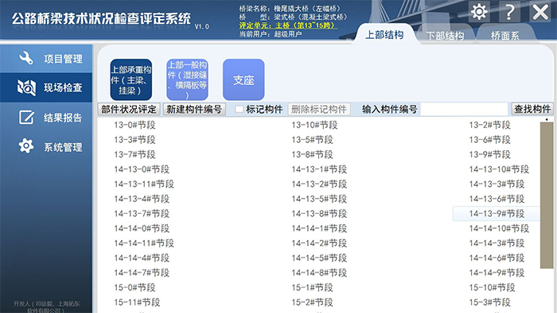
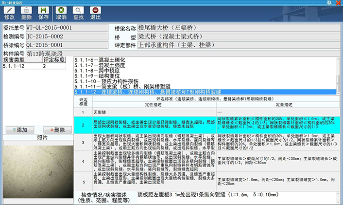
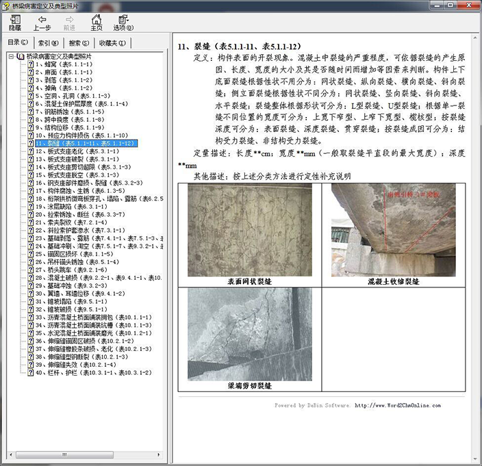

本终端在设计中充分考虑了《公路桥梁技术状况评定标准》（JTG/H21-2011，以下简称《评定标准》）的各种要求和桥梁检测人员的各种需求，进行了深度的、跨专业的融合设计，实现了软件、硬件、用户和谐统一，软硬结合一体化程度较高。 在核心算法方面，研发人员历时2年开发出完全符合《评定标准》的核心算法，覆盖标准中全部17种桥型。经实践检验，证明其科学完善、计算准确。 在操作界面方面，研发人员特别针对桥梁定期检查的野外露天作业特点和检测人员工作习惯，因应人手触摸/触控笔操作需求，对操作界面进行深度优化设计。界面布局简单明了，操作建议便捷。
在实用性方面，终端内置了《评定标准》中桥梁构件的全部评定指标级评定标准，进行构件检查和评定时自动显示，使用方便。
在专业技术支持方面，终端内置专家系统（帮助文件），内含40种桥梁病害定义及典型照片，协助检测人员进行病毒分类，答疑解惑，提高检查和记录的规范性，以及评定准确性。
